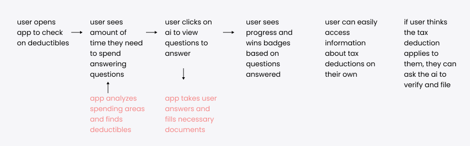

mooni.ai
A UI/UX prototype for an AI tax assistant
TL,DR
Challenge: How might we simplify the tax filing process and make it easy for mooni.ai users to save on taxes?
Date: Jan - Feb 2023
Skill: UX Design, Interaction Design, Visual Design, Prototyping, Usability Testing
Tools: Figma, Procreate, Adobe Illustrator, Midjourney


Context
Like a personal accountant, mooni.ai is an app which uses artificial intelligence trained on the IRS tax code to find every single tax refund and credit that's available to the user. For this project, I worked on product design for the entire user-facing side of mooni.ai directly with their founders.
Research
User Research
Based on user interviews, here are some key findings and pain points identified in regards to the tax filing process:
- Users were unaware of the full range of tax deductions and credits they could potentially claim, indicating a lack of knowledge and understanding in this area.
- Users expressed frustration with the IRS tax code and found difficulty in navigating it.
- Most users in the age group (18-30 year olds) do not have accountants and feel accountants are not worth the money.
- Users desired an automated solution to maximize their tax refunds.
Market Research
Based on competitive analysis with well known tax preparation softwares such as TurboTax and H&R Block, here are some key findings:
- Neither TurboTax or H&R Block use machine learning or artificial intelligence software at the time of research.
- H&R Block emphasizes the importance of human expertise in the tax preparation process, providing a more tailored service.
- Both softwares offer a tiered pricing system with a free version for simple tax solutions.
- Unique selling point with AI which provides increased efficiency and accuracy, as well as the advantage of continuous learning.
User Mapping + Ideation
In collaboration with the founders, we started ideating based on their vision for the app and I created a user flow to translate the user research into their product.
Ideation
Visual Design
We worked with a couple different visual designs for this app. Originally, we created b&w visuals for the first iteration of the app. After creating the initial mockup, the founders decided to pivot to a more colorful design.
The founders chose instead a colorful gradient based theme against a light background for main navigation pages and a dark theme for the AI part of the app, which after fitting wireframes with, we ultimately converged on for the final prototype.
Prototype
The final deliverable for this project included a component library and a working a fully functional prototype (120 pages!).


Reflection
Advocating for UX research and creating the most maximal MVP
While the short time frame of this project did not allow for extensive user research, the user interviews which were conducted allowed for important insight into what users need and want from this kind of product, allowing me to prioritize better when it came to the actual design phase of the project. Always advocate for the user!
This is the first time I've had to build out a settings feature, with each and every button and section working as it would in the final product. But these details are what made this prototype feel complete enough to be presented to users to truly play around with, without any coding involved.